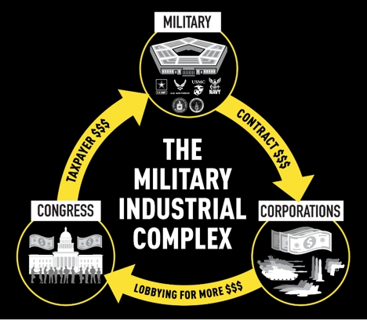
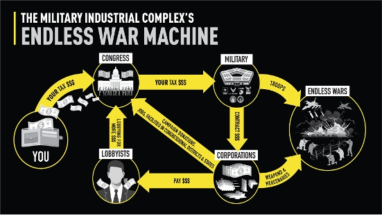
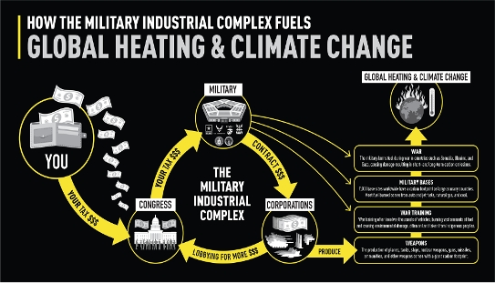
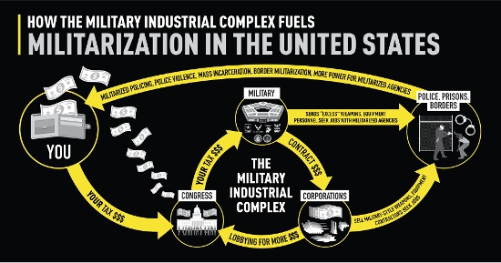

We need to talk about what bombs do in war. Bombs shred flesh. Bombs shatter bones. Bombs dismember. Bombs cause brains, lungs, and other organs to shake so violently they bleed, rupture, and cease functioning. Bombs injure. Bombs kill. Bombs destroy.
Bombs also make people rich.
When a bomb explodes, someone profits. And when someone profits, bombs claim more unseen victims. Every dollar spent on a bomb is a dollar not spent saving a life from a preventable death, a dollar not spent curing cancer, a dollar not spent educating children. That’s why, not so long ago a retired five-star general and President Dwight D. Eisenhower rightly called spending on bombs and all things military a “theft.”
The perpetrator of that theft is perhaps the world’s most overlooked destructive force. It looms unnoticed behind so many major problems in the United States and the world today. Eisenhower famously warned Americans about it in his 1961 farewell address, calling it for the first time “the military-industrial complex,” or the MIC.
Start with the fact that, thanks to the MIC’s ability to hijack the federal budget, total annual military spending is far larger than most people realize: around $1,500,000,000,000 ($1.5 trillion). Contrary to what the MIC scares us into believing, that incomprehensibly large figure is monstrously out of proportion to the few military threats facing the United States. One-and-a-half trillion dollars is about double what Congress spends annually on all non-military purposes combined.
Calling this massive transfer of wealth a “theft” is no exaggeration, since it’s taken from pressing needs like ending hunger and homelessness, offering free college and pre-K, providing universal health care, and building a green energy infrastructure to save ourselves from climate change. Virtually every major problem touched by federal resources could be ameliorated or solved with fractions of the cash claimed by the MIC. The money is there.
The bulk of our taxpayer dollars are seized by a relatively small group of corporate war profiteers led by the five biggest companies profiting off the war industry: Lockheed Martin, Northrop Grumman, Raytheon (RTX), Boeing, and General Dynamics. As those companies have profited, the MIC has sowed incomprehensible destruction globally, keeping the United States locked in endless wars that, since 2001, have killed an estimated 4.5 million people, injured tens of millions more, and displaced at least 38 million, according to Brown University’s Costs of War Project.
The MIC’s hidden domination of our lives must end, which means we must dismantle it. That may sound totally unrealistic, even fantastical. It is not. And by the way, we’re talking about dismantling the MIC, not the military itself. (Most members of the military are, in fact, among that the MIC’s victims.)
While profit has long been part of war, the MIC is a relatively new, post-World War II phenomenon that formed thanks to a series of choices made over time. Like other processes, like other choices, they can be reversed and the MIC can be dismantled.
The question, of course, is how?
The Emergence of a Monster
To face what it would take to dismantle the MIC, it’s first necessary to understand how it was born and what it looks like today. Given its startling size and intricacy, we and a team of colleagues created a series of graphics to help visualize the MIC and the harm it inflicts, which we’re sharing publicly for the first time.
The MIC was born after World War II from, as Eisenhower explained, the “conjunction of an immense military establishment” — the Pentagon, the armed forces, intelligence agencies, and others — “and a large arms industry.” Those two forces, the military and the industrial, united with Congress to form an unholy “Iron Triangle” or what some scholars believe Eisenhower initially and more accurately called the military-industrial–congressional complex. To this day those three have remained the heart of the MIC, locked in a self-perpetuating cycle of legalized corruption (that also features all too many illegalities).
The basic system works like this: First, Congress takes exorbitant sums of money from us taxpayers every year and gives it to the Pentagon. Second, the Pentagon, at Congress’s direction, turns huge chunks of that money over to weapons makers and other corporations via all too lucrative contracts, gifting them tens of billions of dollars in profits. Third, those contractors then use a portion of the profits to lobby Congress for yet more Pentagon contracts, which Congress is generally thrilled to provide, perpetuating a seemingly endless cycle.

But the MIC is more complicated and insidious than that. In what’s effectively a system of legalized bribery, campaign donations regularly help boost Pentagon budgets and ensure the awarding of yet more lucrative contracts, often benefiting a small number of contractors in a congressional district or state. Such contractors make their case with the help of a virtual army of more than 900 Washington-based lobbyists. Many of them are formerPentagon officials, or former members of Congress or congressional staffers, hired through a “revolving door” that takes advantage of their ability to lobby former colleagues. Such contractors also donate to think tanks and university centers willing to support increased Pentagon spending, weapons programs, and a hyper-militarized foreign policy. Ads are another way to push weapons programs on elected officials.
Such weapons makers also spread their manufacturing among as many Congressional districts as possible, allowing senators and representatives to claim credit for jobs created. MIC jobs, in turn, often create cycles of dependency in low-income communities that have few other economic drivers, effectively buying the support of locals.
For their part, contractors regularly engage in legalized price gouging, overcharging taxpayers for all manner of weapons and equipment. In other cases, contractor fraud literally steals taxpayer money. The Pentagon is the only government agency that has never passed an audit — meaning it literally can’t keep track of its money and assets — yet it still receives more from Congress than every other government agency combined.

As a system, the MIC ensures that Pentagon spending and military policy are driven by contractors’ search for ever-higher profits and the reelection desires of members of Congress, not by any assessment of how to best defend the country. The resulting military is unsurprisingly shoddy, especially given the money spent. Americans should pray it never actually has to defend the United States.
No other industry — not even Big Pharma or Big Oil — can match the power of the MIC in shaping national policy and dominating spending. Military spending is, in fact, now larger (adjusting for inflation) than at the height of the wars in Vietnam, Afghanistan, or Iraq, or, in fact, at any time since World War II, despite the absence of a threat remotely justifying such spending. Many now realize that the primary beneficiary of more than 22 years of endless U.S. wars in this century has been the industrial part of the MIC, which has made hundreds of billions of dollars since 2001. “Who Won in Afghanistan? Private Contractors” was the Wall Street Journal’s all too apt headline in 2021.
Endless Wars, Endless Death, Endless Destruction
“Afghanistan” in that headline could have been replaced by Korea, Vietnam, or Iraq, among other seemingly endless U.S. wars since World War II. That the MIC has profited off them is no coincidence. It has helped drive the country into conflicts in countries ranging from Korea, Vietnam, Cambodia, and Laos, to El Salvador, Guatemala, Panama, and Grenada, to Afghanistan, Libya, Somalia, and so many others.
Deaths and injuries from such wars have reached the tens of millions. The number of estimated deaths from the post-9/11 wars in Afghanistan, Iraq, Pakistan, Syria, and Yemen is eerily similar to that from the wars in Vietnam, Laos, and Cambodia: 4.5 million.
The numbers are so large that they can become numbing. The Irish poet Pádraig Ó Tuama helps us remember to focus on:

one life
one life
one life
one life
one life
because each time
is the first time
that that life
has been taken.
The Environmental Toll
The MIC’s damage extends to often irreparable environmental harm, involving the poisoning of ecosystems, devastating biodiversity loss, and the U.S. military’s carbon footprint, which is larger than that of any other organization on earth. At war or in daily training, the MIC has literally fueled global heating and climate change through the burning of fuels to run bases, operate vehicles, and produce weaponry.

The MIC’s human and environmental costs are particularly invisible outside the continental United States. In U.S. territories and other political “grey zones,” investments in military infrastructure and technologies rely in part on the second-class citizenship of Indigenous communities, often dependent on the military for their livelihoods.
Endless Wars at Home
As the MIC has fueled wars abroad, so it has fueled militarization domestically. Why, for example, have domestic police forces become so militarized? At least part of the answer: since 1990, Congress has allowed the Pentagon to transfer its “excess” weaponry and equipment (including tanks and drones) to local law enforcement agencies. These transfers conveniently allow the Pentagon and its contractors to ask Congress for replacement purchases, further fueling the MIC.
Seeking new profits from new markets, contractors have also increasingly hawked their military products directly to SWAT teams and other police forces, border patrol outfits, and prison systems. Politicians and corporations have poured billions of dollars into border militarization and mass incarceration, helping fuel the rise of the lucrative “ border-industrial complex” and “prison-industrial complex,” respectively. Domestic militarization has disproportionately harmed Black, Latino, and Indigenous communities.

An Existential Threat
Some will defend the military-industrial complex by insisting that we need its jobs; some by claiming it’s keeping Ukrainians alive and protecting the rest of Europe from Vladimir Putin’s Russia; some by warning about China. Each of those arguments is an example of the degree to which the MIC’s power relies on systematically manufacturing fear, threats, and crises that help enrich arms merchants and others in the MIC by driving ever more military spending and war (despite a nearly unbroken record of catastrophic failure when it comes to nearly every U.S. conflict since World War II).
The argument that current levels of military spending must be maintained for “the jobs” should be laughable. No military should be a jobs program. While the country needs job programs, military spending has proven to be a poor job creator or an engine of economic growth. Research shows it creates far fewer jobs than comparable investments in health care, education, or infrastructure.
U.S. weaponry has aided Ukrainian self-defense, though the weapons manufacturers are anything but altruists. If they truly cared about Ukrainians, they would have forgone any profits, leaving more money for humanitarian aid to that country. Instead, they’ve used that war, as they have Israel’s genocidal war on Gaza and growing tensions in the Pacific, to cynically inflate their profits and stock prices dramatically.
Discard the fearmongering and it should be clear that the Russian military has demonstrated its weakness, its inability to decisively conquer territory near its own borders, let alone march into Europe. In fact, both the Russian and Chinese militaries pose no conventional military threat to the United States. The Russian military’s annual budget is one-tenth or less than the size of the U.S. one. China’s military budget is one-third to one-half its size. The disparities are far larger if you combine the U.S. military budget with those of its NATO and Asian allies.
Despite this, members of the MIC are increasingly encouraging direct confrontations with Russia and China, aided by Putin’s war and China’s own provocations. In the “Indo-Pacific” (as the military calls it), the MIC is continuing to cash in as the Pentagon builds up bases and forces surrounding China in Australia, Guam, the Federated States of Micronesia, Japan, the Marshall Islands, the Northern Mariana Islands, Palau, Papua New Guinea, and the Philippines.
Such steps and a similar buildup in Europe are only encouraging China and Russia to strengthen their own militaries. (Just imagine how American politicians would respond if China or Russia were to build a single military base anywhere close to this country’s borders.) While all of this is increasingly profitable for the MIC, it is heightening the risk of a military clash that could spiral into a potentially species-ending nuclear war between the United States and China, Russia, or both.
The Urgency of Dismantling
The urgency of dismantling the military-industrial complex should be clear. The future of the species and planet depends on it.
The most obvious way to weaken the MIC would be to starve it of its lifeblood, our tax dollars. Few noticed that, after leaving office, former Trump-era Pentagon chief Christopher Miller called for cutting the Pentagon’s budget in half. Yes, in half.
Even a 30% cut — as happened all too briefly after the Cold War ended in 1991 — would free hundreds of billions of dollars annually. Imagine how such sums could build safer, healthier, more secure lives in this country, including a just economic transition for any military personnel and contractors losing jobs. And mind you, that military budget would still be significantly larger than China’s, or Russia’s, Iran’s, and North Korea’s combined.
Of course, even thinking about cutting the Pentagon budget is difficult because the MIC has captured both political parties, virtually guaranteeing ever-rising military spending. Which brings us back to the puzzle of how to dismantle the MIC as a system.
In short, we’re working on the answers. With the diverse group of experts who helped produce this article’s graphics, we’re exploring, among other ideas, divestment campaigns and lawsuits; banning war profiteering; regulating or nationalizing weapons manufacturers; and converting parts of the military into an unarmed disaster relief, public health, and infrastructure force.
Though all too many of us will continue to believe that dismantling the MIC is unrealistic, given the threats facing us, it’s time to think as boldly as possible about how to roll back its power, resist the invented notion that war is inevitable, and build the world we want to see. Just as past movements reduced the power of Big Tobacco and the railroad barons, just as some are now taking on Big Pharma, Big Tech, and the prison-industrial complex, so we must take on the MIC to build a world focused on making human lives rich (in every sense) rather than one focused on bombs and other weaponry that brings wealth to a select few who benefit from death.